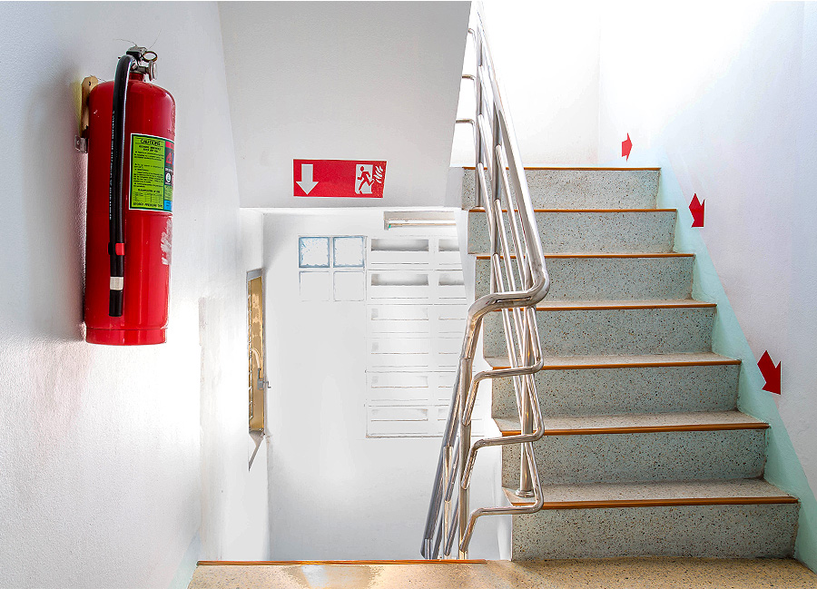

화재 경보가 울리면 비상 계단을 통해 건물 밖으로 신속하게 대피해야 합니다.
고층 빌딩에서는 창 밖으로 검은 연기가 올라오고 있다면 아래층에서 불이 난 것이므로 옥상으로 대피하고, 연기가 보이지 않는다면 위층에서 불이 난 것이므로 건물 아래층 출입구로 나갑니다.
불이 위층에서 났는지 아래층에서 났는지 확인하기 어렵다면, 119에 연락해 건물 안 자신의 위치를 알리고 이용할 비상계단의 위치를 물어 보세요.

평면적이 넓은 대형 건물에서는 화재와 먼 쪽의 비상계단을 이용해 아래로 대피할 수도 있습니다.
지하에서 불이 났을 때는 벽을 따라 움직이면서 열기가 없고 연기가 올라가는 계단을 (바로 위에 불이 없고 신선한 공기가 있다는 뜻) 따라 탈출합니다.